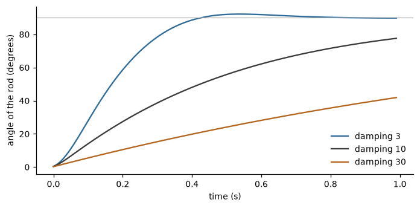

Humanoid and mass-spring models#
A captured skeleton is a noisy, incomplete record of a body: joints jitter, drop out for a few frames, and move in ways a real body could not (a forearm that changes length). A mass-spring model is a small physical simulation that is driven by the captured movement and gives back the movement of a body that obeys simple mechanics. Its joints are masses, its bones are springs, and the output is a smooth, always articulated pose with constant bone lengths. The same model can also be run ahead of the data, to forecast a movement a fraction of a second early, or fitted to a recording, to find the masses and the stiffnesses that explain it.
Seven features implement this family (all in layer 1, see Physical signals). They are virtual sensors in the sense of the conceptual model (Conceptual framework): they take a signal (a skeleton) and give a signal again. The body-model approach follows the HumanoidModel blocks of the EyesWeb platform [2, 4]; for the original formulation of mass-spring humanoid models in the EyesWeb libraries [citation needed] (the publication that introduced the HumanoidModel blocks).
The model#
The notation is that of Notation, units and conventions. A model has \(K\) masses and a set of springs. The mass \(k\) has weight \(w_k\) and position \(\mathbf{p}_k(t)\in\mathbb{R}^3\);
a spring joins two masses, the hinge and the tip, and plays the role of a bone. The model is integrated in time with
steps of integration_step seconds (0.001 s by default): a call that advances it by \(\Delta t\) seconds runs
\(\lfloor \Delta t / \text{integration\_step} \rfloor\) steps. The motion of each mass follows Newton’s law,
where the forces on a mass come from the springs it belongs to, and optionally from gravity and from a floor. Each spring exerts two forces:
a length force, which keeps the bone at its rest length (switch
length_forces);a rotation force, which turns the bone towards the direction given by the input (switch
rotation_forces).
Both have a stiffness and a damping. The damping force is proportional to the relative velocity of the two masses it
connects, so it removes energy. gravity is a vector in length units per second squared (zero by default), and
ground_interaction adds a floor, the plane through floor_position whose normal is opposite to gravity: a mass below it is
pushed back along the normal.
Because only the directions of the input drive the rotation forces, the model keeps its own bone lengths. This is the property that makes the simulated skeleton plausible, and also the reason it does not reproduce the captured one exactly: if a captured forearm gets longer for a frame, the model’s forearm does not.
Bone directions#
The input of a simulator is a set of bone directions. HumanoidOrientations computes
them from joint positions for the fixed humanoid: for each of its 20 bones it gives the unit direction expressed in the frame
of the previous bone of the chain, so it does not depend on where the body is or on how its parent segments are oriented. The
output is a \((20, 3)\) array labelled by HUMANOID_BONES and is the form of the control input of
HumanoidSimulator, which takes it as it is. A joint missing in a frame keeps the
position it had in the previous frame.
GenericModelOrientations is the same step for a model of your own: for each spring
\(s\) it gives the vector from the hinge to the tip,
not normalised and in the unit of the data. It is the front end of the generic simulator and predictor.
Following a movement: the simulators#
HumanoidSimulator integrates a fixed humanoid of 21 masses (the joints of
HUMANOID_JOINTS, those of the first Kinect SDK as EyesWeb names them) joined by 20 springs. The head is the root: it is
very heavy and pinned, so the output is the pose of a body that hangs from where its head starts (a T-pose at the origin,
or, with start_from_input=True, the first frame) and the translation of the person is not followed. The simulator takes
the captured joints and, optionally, control bone directions that replace the ones seen in the joints.
GenericModelSimulator does the same for any
MassSpringModel, also loaded from an EyesWeb XML file, and takes bone directions as input.
>>> import numpy as np
>>> from pyeyesweb.physical_signals import HUMANOID_BONES, HUMANOID_JOINTS
>>> from pyeyesweb.physical_signals import HumanoidOrientations, HumanoidSimulator
>>> len(HUMANOID_JOINTS), len(HUMANOID_BONES)
(21, 20)
>>> tpose = HumanoidSimulator(sampling_rate=25.0).process({"head": (0.0, 0.0, 0.0)}).joints
>>> tpose.shape
(21, 3)
>>> captured = tpose.copy()
>>> captured[HUMANOID_JOINTS.index("left_hand")] += (0.1, 0.0, 0.1) # move the left hand by 0.1 m along x and z
>>> directions = HumanoidOrientations().process(captured).directions
>>> directions.shape
(20, 3)
>>> follower = HumanoidSimulator(sampling_rate=25.0, start_from_input=True)
>>> result = follower.process(captured, control=directions)
>>> result.status.name, bool(np.allclose(result.joints, captured))
('OK', True)
The first call after construction or reset() with start_from_input=True puts the model on the input and returns it
unchanged, as the last line shows. From then on the model moves by its dynamics.
Looking ahead: the predictors#
GenericModelPredictor follows the bone directions like the generic simulator
and gives positions, where the masses will be prediction_interval seconds later (0.2 s by default) when the model is left
to move on its own. With mode="masses_inertia" the masses keep their velocity; with "directions_linear" the bone
directions are extrapolated linearly. The forecast does not disturb the state of the model that follows the data.
PointsPredictor is the simplest forecast and needs no model: each labelled point is
extended by its last displacement,
a constant-velocity prediction one frame ahead. The step is one frame, whatever the sampling rate: the feature has no time axis. A point seen for the first time, or after a gap, is returned unchanged.
Learning the body: the estimator#
GenericModelEstimator follows the observed positions of the masses of a model and,
while enable_adaptation is on, perturbs one parameter per frame (a stochastic coordinate descent). It keeps the change when
it lowers a cost that weighs position, direction and speed errors, with weights cost_distance, cost_directions and
cost_speed. Which parameters are adapted is chosen by estimate_masses, estimate_length_springs and
estimate_direction_springs; with none of them on, nothing is adapted. Over a recording the model learns the masses, and the
stiffnesses and dampings of the springs, that explain the observed movement, and feature.model is a copy of the model with
the estimated parameters (it can be saved as an XML file). The random draws are seeded (seed, 12345 by default), so a run is
reproducible.
Its second output, error, is the cost of the frame. It mixes quantities in the unit of the model, so its trend over a
recording says more than its value: it should fall as the model adapts. The result is INVALID_INPUT with the reason
"the result is not finite" when the simulation diverged.
How to read the outputs#
The positions are in units ("m" or "mm", default "m"), labelled by the names of the masses; a joint the model did not
produce is NaN. Orientation outputs are dimensionless unit vectors, except those of GenericModelOrientations, which are
in the unit of the data. Every feature of the family is OK on every valid call, with no warm-up. An infinite value, an empty
frame and a frame with no joint at all are INVALID_INPUT; a joint that is missing (absent from the dict, or a row with a
NaN) is a dropout the model handles: the bones that depend on it stay as they were.
The effect of the damping is the quantity to understand. The figure shows a rod of one metre, with its hinge fixed, that is asked to turn from the x axis to the y axis. A low damping follows the target fast and overshoots it; a high damping is slower, which is the lag of the simulated body behind the captured one.

Numerically, the angle of the rod after 0.05, 0.1, 0.2, 0.5 and 1 s:
>>> from pyeyesweb.physical_signals import GenericModelSimulator, MassSpringModel
>>> model = MassSpringModel()
>>> model.add_mass("root", 1e10)
>>> model.add_mass("tip", 1.0, (1.0, 0.0, 0.0))
>>> model.add_spring("rod", "root", "tip", 1.0, 100.0, (1.0, 0.0, 0.0), 100.0)
>>> def angles(damping):
... simulator = GenericModelSimulator(model, sampling_rate=100.0, damping=damping)
... degrees = []
... for _ in range(100):
... x, y, _z = simulator.process([[0.0, 1.0, 0.0]]).positions[1]
... degrees.append(float(np.degrees(np.arctan2(y, x))))
... return [round(degrees[i], 1) for i in (4, 9, 19, 49, 99)]
>>> angles(3.0)
[8.1, 24.4, 56.0, 91.9, 89.8]
>>> angles(10.0)
[5.2, 12.6, 26.2, 55.1, 77.6]
>>> angles(30.0)
[2.4, 5.0, 10.0, 23.7, 41.9]
Practical notes#
Time. The simulators, the predictor and the estimator advance the model by the time step of the call, in seconds: the
difference of timestamp from the previous call, else 1 / sampling_rate, else one second per call with the reason
"no time given: per-sample derivatives" (see Time, units and parameters). The first timed call after
construction or reset() uses 1 / sampling_rate (or 1 s), never the absolute time. A timestamp that does not increase gives
INVALID_INPUT and leaves the model where it was.
Units: the one exception. The library never rescales data, with one exception. The EyesWeb body is defined in millimetres
and its spring forces depend on the length unit, so HumanoidSimulator works internally in millimetres and converts at the
boundary: with units="m" frames are multiplied by 1000 on the way in and the joints divided by 1000 on the way out; with
"mm" nothing is converted. A body driven in metres reproduces the millimetre run up to rounding, while metres declared as
"mm" give a different motion, because the model is not scale free. The generic models do not convert: they run in the unit of
their own model, units only names it, and stiffness and damping are expressed in that unit too, so the same model written in
another unit moves differently.
>>> metres = HumanoidSimulator(sampling_rate=25.0)
>>> millimetres = HumanoidSimulator(sampling_rate=25.0, units="mm")
>>> mislabelled = HumanoidSimulator(sampling_rate=25.0, units="mm")
>>> for _ in range(50):
... in_m = metres.process(captured).joints
... in_mm = millimetres.process(captured * 1000.0).joints
... wrong = mislabelled.process(captured).joints
>>> bool(np.allclose(in_m * 1000.0, in_mm))
True
>>> bool(np.allclose(in_m, wrong))
False
Damping. The default damping is 10. EyesWeb’s default, 0.3, makes chains of four or five bones diverge; 10 is stable with
noisy input and 3 follows clean data with less lag.
Known limitation. The rotation springs make chains of four or five bones flutter at a low damping, and the model is not
a noise filter in the signal-processing sense: it follows the input with a lag that grows with damping, and it is not tuned
to remove a given frequency band.
Labels. The model has its own joint names; joint_map maps each of them to the label of your data, and the names you do not
list keep their own. The constructor raises when the labels do not hold a joint the model needs (see
Map your marker set to a skeleton).
Corrected in the core. The damping force of the simulators is proportional to the relative velocity of the two masses (the original used speed magnitudes and injected energy); the feet of the T-pose are built along the direction they rest in, so the body at rest is in equilibrium.